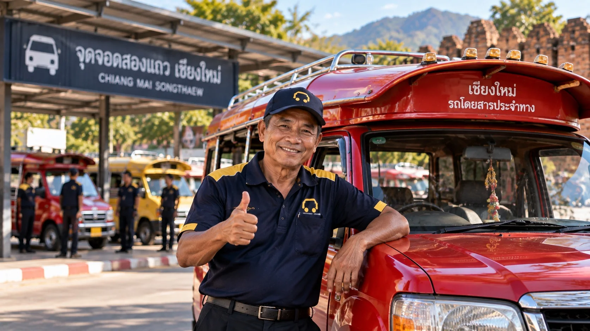
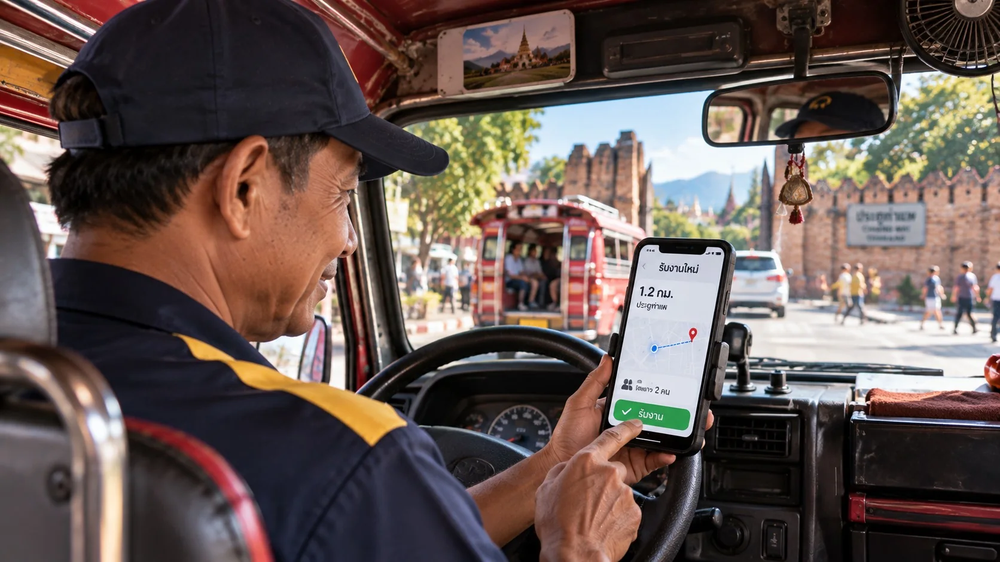

More work, without leaving your cooperative
voyiro accepts only properly licensed public drivers, and you apply through your home cooperative. We do not bring private cars in to compete with you.
Built specifically for Thailand's public drivers
Jobs from hotels and tour companies
Passengers from partner hotels, tour companies and restaurants that you would not normally reach.
Know your earnings before you accept
Every job card shows what you will receive before you accept it. No sign-up fee.
Your cooperative looks after you
Your home cooperative approves and supports its members, so any problem goes to someone who knows you.
Easy to use through LINE
Accept jobs through the LINE you already use — no complicated system to learn.
Passengers are verified
You know the pick-up, the drop-off and the fare before you accept a job, so there is no haggling or arguing over the price.
Legal from day one
From 31 March 2026, drivers accepting jobs through an app must hold a public driving licence, with a compliance deadline of 30 September 2026. voyiro accepts only drivers who are already licensed.
Who can apply
- Be a member of a transport cooperative that works with voyiro
- Hold a valid public driving licence, or the driver identification document for your vehicle type
- Have a vehicle correctly registered for its type, with compulsory motor insurance and road tax up to date
- Have your home cooperative certify your membership and check your documents before you join
- Have a smartphone that can run LINE
What to prepare
| Document | Notes |
|---|---|
| National ID card | The original, plus a selfie holding the card |
| Public driving licence | For your vehicle type, still valid |
| Copy of the vehicle registration | The registration details page |
| Cooperative membership certificate | Issued by your cooperative |
| Front page of your bank book | Name matching your ID card |
| Photos of the vehicle from four sides | With the plate clearly visible |
Apply through your cooperative in five steps
Tell your cooperative
Let the cooperative staff know that you want to join voyiro.
Register through LINE
Fill in your details and upload your documents using the link your cooperative sends you.
Cooperative approval
Staff check your documents and confirm your membership.
Training and uniform
Train on the system, then collect your uniform shirt and driver ID card.
Start accepting jobs
Go online, and the system sends you jobs nearby straight away.
Your cooperative not working with voyiro yet? Introduce voyiro to your cooperative
Your earnings, visible only to you
Earning rates and fees follow the agreement between the driver, the home cooperative and voyiro. You can see them in the driver app after signing in.
See what you will earn
Every job card shows the amount you receive for that job before you accept it
Your own totals
See your trips and your own earnings in the driver app
Yours to keep
Tips from passengers go entirely to the driver
Notice in advance
Announced through your cooperative and in the app before taking effect, and never applied to jobs already accepted
Where to find your rates
- Sign in to the driver app with LINE or your plate number
- The rates and terms you accepted, with their effective date, are in the app
- Questions about a payment can go to your cooperative staff
Getting paid
- The payment cycle and method are shown in the driver app
- Every job has a record you can check later
- No sign-up fee
What the driver app does for you
Jobs near you
The system sends you jobs close by, cutting waiting time and empty running.
See your daily earnings
Your trips and each day's total in one place.
Automatic navigation
Navigation to the pick-up and drop-off starts the moment you accept a job.
Talk to your passenger
Contact the passenger through the system to agree on exactly where to meet.
SOS button
Report an emergency from inside the app while you are on a trip.

The same standard in every vehicle, in every province
These standards protect the reputation of every driver in the network.
- Wear the voyiro uniform and driver ID card while working — the same standard in every region and every country
- Random selfie identity checks 2–5 times a day; never let anyone else use your account
- Collect only the fare shown; never charge extra
- Never take passengers to shops they did not ask for
- A three-warning system: first, a warning · second, a temporary suspension from jobs · third, a review by the cooperative together with voyiro
Questions from drivers
Can I still pick up passengers in the street?
Yes, just as before. voyiro is extra work, not an obligation to take jobs only through the system.
Can I apply if I am not a cooperative member?
For now we accept applications only through participating cooperatives, so that everyone in the network is properly licensed and has someone looking after them.
How many hours a day do I have to drive?
There is no minimum. Go online whenever you are ready.
What do I do if there is an accident while I am working?
Press the SOS button in the app to report it, then notify your home cooperative and the voyiro team on 081-960-3227 (Mon–Sat 9am–5pm). Every vehicle must carry valid compulsory motor insurance as required by law; additional cover for drivers is being prepared.
Who can see a driver's personal data?
Passengers see the driver's name, vehicle plate and driver ID before they get in and during the trip. Other personal data is handled to PDPA standards.